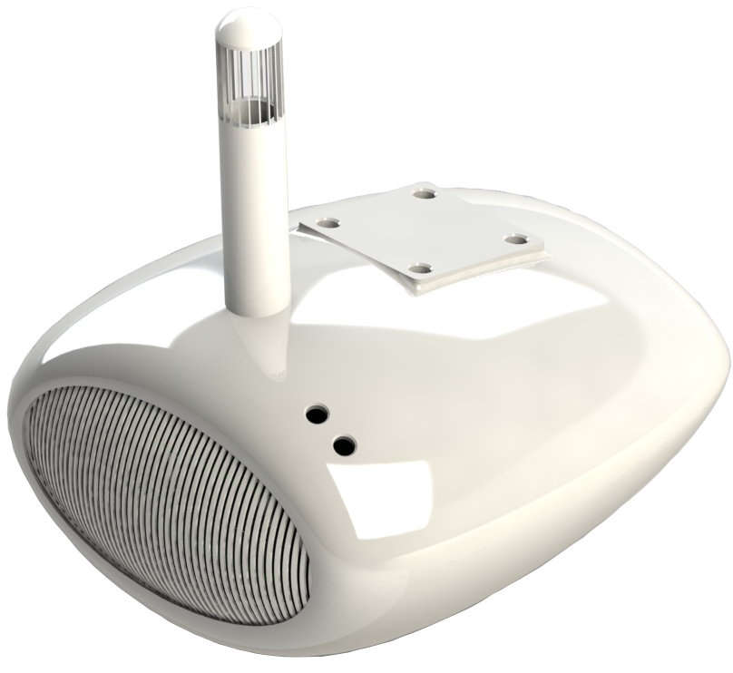
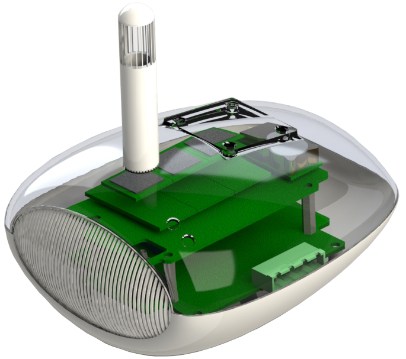
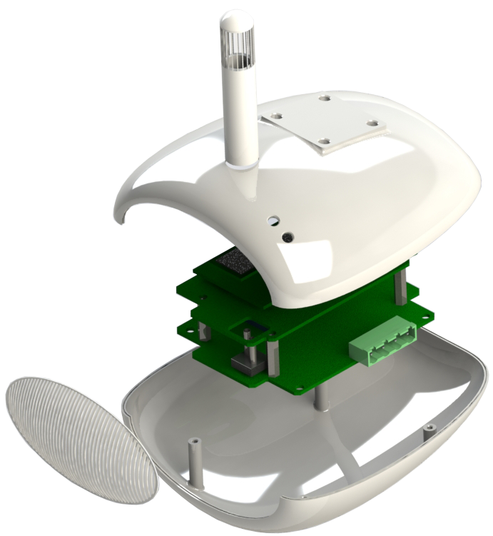

현장 맞춤형 모듈 구조
설치 공간, 요구 풍량과 공정 조건에 따라 장비의 섹션과 배치를 구성합니다.
HVAC / CATEGORY 02
공기의 처리부터 운전 데이터까지, 프로젝트 환경에 맞춰 설계하는 통합 공조 시스템입니다.
05 / ECO AIR HANDLING UNIT
공간과 공정에 필요한 공기를 만들고, 실제 운전 조건에 맞춰 유연하게 구성하는 공조 플랫폼입니다.
팬, 냉·난방 코일과 필터를 기본으로 현장의 목적에 필요한 기능을 조합합니다. 위생적인 패널 구조와 관리 접근성을 고려해 산업시설, 생산공장과 일반 건축물의 공기조화 요구에 대응합니다.
프로젝트 구성 상담 ↗

ENGINEERED FOUNDATION
공조기의 기본 성능뿐 아니라 설치 이후의 위생 관리, 열 손실과 유지관리 동선까지 함께 검토합니다.
설치 공간, 요구 풍량과 공정 조건에 따라 장비의 섹션과 배치를 구성합니다.
내부 접근성과 청결 관리를 고려한 패널 및 프레임 구조를 적용합니다.
단열 패널 구조로 장비 외부와 내부 사이의 불필요한 열 전달을 줄입니다.
기계실형 AHU와 옥상 설치형 RTU 등 프로젝트 환경에 맞는 구성을 검토합니다.
06 / BIO INTEGRATED HVAC
공기를 정화하는 장치와 공간의 기류를 함께 설계해, 사람이 머무는 영역에 더 깨끗한 공기를 전달합니다.
다중이용시설과 실내 밀집 공간에서 오염 공기를 포집·정화하고, 정제된 공기의 공급 위치와 흐름을 제어합니다. 냉난방 및 환기 설비와 통합할 수 있어 쾌적성과 감염 확산 위험 저감을 하나의 공조 흐름으로 관리합니다.
적용 환경 상담 ↗
BIO AIR ENGINEERING
필터 성능만 보는 것이 아니라 오염 공기가 발생하고 이동하는 경로, 정화된 공기가 도달해야 할 생활 영역까지 함께 고려합니다.
바이러스성 에어로졸과 미세 입자가 실내에 머무르거나 확산되기 전에 흡입 지점을 중심으로 공기의 흐름을 유도합니다.
대공간 운전에 필요한 처리 용량을 고려해 오염 입자를 포집하고 정화된 공기를 안정적으로 공급합니다.
사람이 실제로 머무는 높이와 위치에 맞춰 급·배기 흐름을 구성해 공간 전체의 공기 교환을 돕습니다.
기존 냉난방 및 환기 설비와 연계해 온도, 쾌적성, 정화와 공기 흐름을 함께 관리할 수 있습니다.
대중교통 시설 · 의료 및 공공시설 · 다중이용시설 · 상업공간 · 실내 밀집 환경
공기 정화 및 감염 확산 저감 효과는 공간 구조, 풍량, 필터 구성, 설치 위치와 운전 조건에 따라 달라질 수 있으며 프로젝트별 기술 검토를 통해 구성합니다.
07 / IONIC ELECTRIC FILTER
미세 입자에 전하를 부여하고 전기장의 힘으로 포집하는 2단계 전기집진 필터입니다.
공기가 통과하는 첫 단계에서 입자를 이온화하고, 다음 단계에서 대전된 입자를 집진 플레이트로 유도합니다. 높은 미세 입자 제거 성능과 낮은 압력 손실을 함께 지향해 공조기의 에너지 부담과 필터 관리 효율을 고려합니다.
IEF 적용 검토 ↗
TESTED PERFORMANCE
제공된 성능시험 결과 중 제품 선정에 필요한 핵심 정보만 정리했습니다. 모든 수치는 명시된 시험 조건에 따른 결과입니다.
2.5 m/s 시험 조건의 미세입자 제거율
2.5 m/s 시험 조건의 입자 제거율
2.5 m/s 시험 조건의 압력 손실
풍량 3,400 CMH 조건의 제공 시험 결과입니다.
H1N1 시험주 대상 제공 시험 결과입니다.
1시간 시험 기준 NH₃ 99.07%, H₂S 99% 결과가 제시되었습니다.
병원 · 제약 · 식품시설 · 축사 및 재배시설 · 저온창고 · 물류창고 · 대형마트
입자 제거율: 성능시험 1000010029 · 오존 시험: 성능시험 1000009489 · 바이러스 시험: WTS2025-0194-1. 실제 성능은 풍량, 오염 농도, 장비 구성과 유지관리 상태에 따라 달라질 수 있습니다.
05 / ECO AHU · PROJECT-BUILT FUNCTIONS
운영 환경과 에너지 전략에 따라 각 기능을 독립적으로 검토하고 하나의 공조 시스템으로 연결합니다.
외기 조건이 유리할 때 실외 공기를 활용해 냉방 부하를 낮춥니다. 연중 냉방이 필요한 전산실과 산업시설의 운전 효율 개선에 적합합니다.
외기 조건 감지 · 댐퍼 제어 · 냉방 부하 절감외부 오염물질이 민감한 환경에서 열교환을 통해 외기의 냉열을 활용합니다. 실내 청정도를 유지하면서 계절 에너지를 이용합니다.
공기 분리 · 열교환 · 중요 설비 보호배터리 에너지저장장치의 형상, 발열 조건과 설치 환경을 반영해 맞춤형 냉각 흐름을 설계합니다.
발열 대응 · 맞춤 기류 · 안정적 운전 환경필터와 실내 CO₂ 등 환경 센서를 연계해 필요한 환기량을 관리하고 쾌적한 실내 공기 환경을 지원합니다.
여과 · 환경 센싱 · 환기량 관리05 / ECO AHU · AIR HANDLING CONTROL SYSTEM
공조 장비의 센서 데이터를 한곳에 모으고, 현재 상태를 이해하기 쉬운 화면으로 보여주며, 현장과 원격에서 운전을 관리합니다.
장비 상태와 주요 센서값, 알람을 한 화면에서 확인해 현장의 판단 속도를 높입니다.
운영 환경에 따라 현장 제어와 원격 운전을 연결하고 변화에 신속하게 대응합니다.
실시간·누적 운전 자료를 정리해 성능 확인과 에너지 운영 검토에 활용합니다.
요구 풍량과 시스템 상태를 반영해 팬과 주요 장치가 필요한 만큼 운전하도록 제어합니다.
실제 제어 범위와 연계 방식은 장비 구성, 센서 및 현장 시스템 조건에 따라 설계됩니다. 에너지 개선 효과는 운전 환경에 따라 달라질 수 있습니다.
08 / INDOOR AIR QUALITY SENSOR SYSTEM
실내 공기질의 미세한 변화를 실시간으로 포착하고, 공조 설비와 지능적으로 연동하는 다변수 환경 센서 플랫폼입니다.
초미세먼지(PM2.5), 미세먼지(PM10), 이산화탄소(CO₂), 휘발성유기화합물(TVOC) 및 온·습도를 단일 디바이스에서 고정밀 계측합니다. 수집된 환경 데이터는 Eco AHU 및 환기 제어 시스템(DCV)과 직접 연동되어, 오염 발생 시 즉각 환기 풍량을 늘리고 청정 상태에서는 에너지를 절감하는 능동형 스마트 공조를 완성합니다.
IAQS 솔루션 문의 ↗
PRECISION SENSING & DCV CONTROL
단순 데이터 모니터링을 넘어, 실내 오염도에 따라 능동적으로 환기량과 필터 효율을 제어하는 수요응동형 환기(DCV)의 핵심 센서입니다.
PM2.5/PM10 미세먼지, CO₂, TVOC, 온·습도 등 6가지 핵심 공기질 지표를 단일 센서 챔버에서 정밀 수집합니다.
실내 재실 인원 증가나 오염 급증 시 Eco AHU 댐퍼 및 팬 인버터 속도를 능동 제어하여 쾌적성과 에너지를 최적화합니다.
전원·통신 기판과 초정밀 광학 센싱 기판을 상·하단으로 물리적 분리하여 전자기적 노이즈 간섭과 열 드리프트를 차단합니다.
RS-485(Modbus-RTU) 및 산업 표준 통신을 지원해 중앙 공조 및 빌딩 에너지관리시스템(BEMS)에 즉시 연동됩니다.
INTERNAL ARCHITECTURE & MODULAR MECHANICS
투명 챔버와 모듈형 분해 구조를 통해 가혹한 산업 및 빌딩 환경에서도 장기 측정 신뢰성과 신속한 유지보수를 보장합니다.

INTERNAL STRUCTURE초정밀 계측을 위해 내부 회로와 센서 블록을 기능별로 엄격히 구획화했습니다.

EXPLODED VIEW설치 편의성과 필터 청소, 부품 교체 동선을 고려한 인간공학적 하드웨어 설계입니다.
LIVE AIR QUALITY TELEMETRY
IAQS가 계측한 데이터를 바탕으로 Eco AHU와 IEF 전기집진필터가 자동으로 가동되는 실시간 연동 인터페이스입니다.
기준치 15 μg/m³ 이하 (최적 청정)
기준치 50 μg/m³ 이하 (정상 범위)
기준치 1,000 ppm 이하 (신선 공기)
기준치 0.40 mg/m³ 이하 (안전 수준)
재실 인원 밀집도에 따라 환기량을 자동으로 제어(DCV)하여 근무 쾌적성 유지 및 냉난방 환기 손실 20~30% 절감
환자실, 병동, 교실의 이산화탄소와 유해가스 농도를 상시 추적해 바이러스 확산 위험을 낮추고 맑은 환경 유지
정밀 기판 제조 공정 및 전산실의 미세먼지 입자 및 온·습도 드리프트를 24시간 실시간 감시하고 중앙 BEMS에 보고